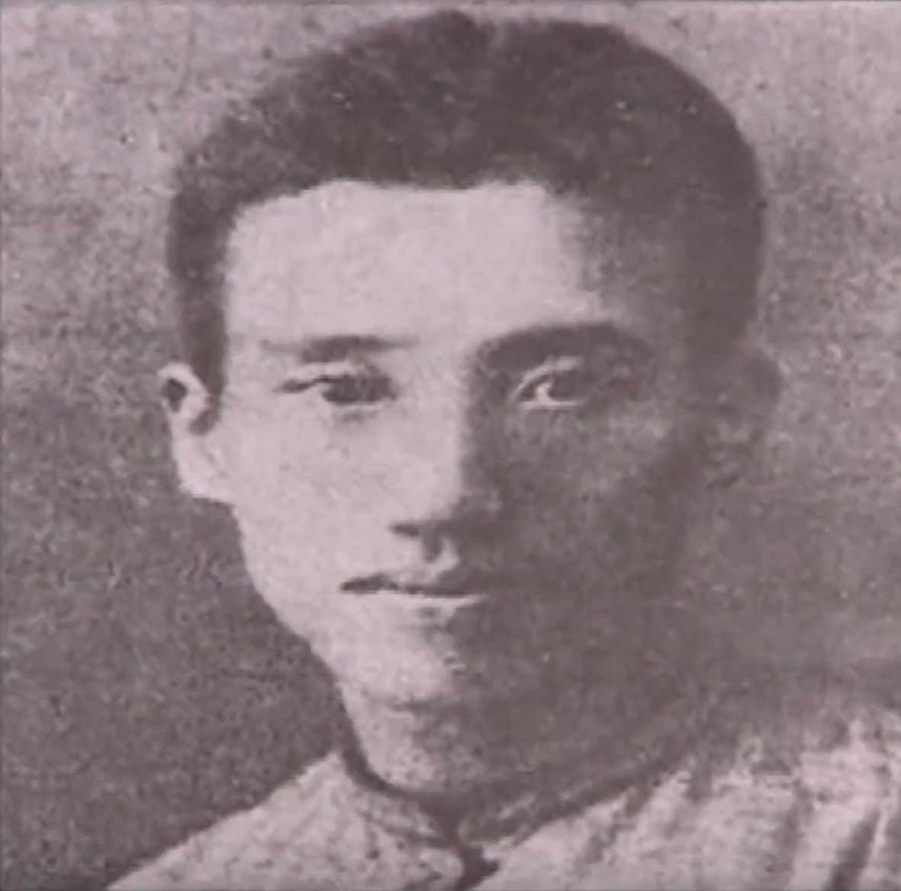

澎湃烈士在沪革命活动地点（兼中共中央军委关旧址）
在新闸路613弄12号（原新闸路经远里1015号）矗立着一幢砖木结构坐北朝南的石库门建筑，建于1917年。1928年至1929年，这里是中共中央军委机关所在地和彭湃烈士在沪革命的活动地。

根据共产国际执行委员会东方部要求中共中央建立军事部的指示，1925年10月，中共中央执行委员会扩大会议通过的《中国现时的政局与共产党的职任议决案》规定：中央委员会之下必须设立中央军事委员会。同月，中共中央在上海中央军事运动委员会，12月改为军事部。在中共中央的领导下，早期中央军委（军事部）对宣传马克思主义理论、培养军事干部、武装工农、收集情报、制定各地起义计划、创建人民军队、指导红军建设等发挥了重要作用、积累了宝贵经验、打下了重要基础。
中央军事部与中央军事委员会名称多次更迭，1927年5月，中共五大设立军事（军人）部和中央军委，周恩来任部长和主任。中共六大重新设立军事部，之下设立军事委员会，为讨论和建议的机关。1929年1月，中共中央决定在中央政治局下设中央军事委员会，同时取消中央军事部，但后来又指出，中央军事部是党的最高军事指导机关。翌年2月，中央临时政治局会议决定将军事部和中央军委合并，成立9人军委，直属政治局。1933年1月，中央军委离开上海，迁往苏区，在上海长达8年。
这里不仅是中央军委机关所在地，也是彭湃烈士在沪革命的活动地。1928年，32岁的彭湃来到上海，就在这里开展工作。这栋名叫"经远里"的老式石库门住宅，见证了彭湃最后的革命足迹，浸润着烈士的鲜血，诉说着烈士的忠贞信念。
彭湃，1896年出生，广东海丰人，著名农民运动领袖。彭湃家境富裕，是当地首富。彭湃曾说："我的家庭在海丰县可以算做个大地主，每年收入约千余石租，共计被统辖的农民男女老幼不下千五百人。我的家庭男女老少不上三十口，平均每一人有五十个农民做奴隶。"其生母是贫苦农家的女儿，对少年彭湃的影响很大，对农民有强烈的同情心，在海丰中学时成为群进会的骨干成员之一。
彭湃1921年加入中国社会主义青年团，1923年底到1924年初转为中国共产党党员。1923年，海丰总农会成立，彭湃任会长。1924年，担任第一届农民运动讲习所主任。翌年4月，开办海丰农民运动讲习所，并担任所长，同年9月，彭湃又担任第五届农民运动讲习所主任，后来毛泽东接替彭湃担任第六届农讲所主任。从开辟海丰农运开始，彭湃以全部精力投入农民运动，积累了丰富经验，被称为"农民运动的大王"和"中国农民运动的领袖"。
中共五大时，彭湃被选为中央委员，担任南昌起义前敌委员会委员，"八七会议"上被选为临时中央政治局候补委员。1927年11月，创建中国第一个红色政权——海陆丰工农兵苏维埃。中共六大后又被选为中央政治局委员，1928年冬，赴上海担任中共中央农委书记，兼任中共江苏省委常委会委员、军委书记。
1928年，他入住经远里，把一间仅8平方米的亭子间作为工作室兼寓所，室内只有一张小铁床、一只煤油炉、一张简陋的桌子和两把椅子，前楼作为开会和联络的地方。在半年的时间里，彭湃认真总结了自己从事农民运动的经验，写下《雇农工作大纲》，并提出划分农民标准、提高农民教育等主张。
1929年8月24日，彭湃在经远里12号参加江苏省委军委会议时，由于白鑫出卖，与杨殷、颜昌颐、邢士贞等同时被捕。
资料来源：上海智慧党建官网
发布时间：2025-04-28 08:40
浏览 4516 次